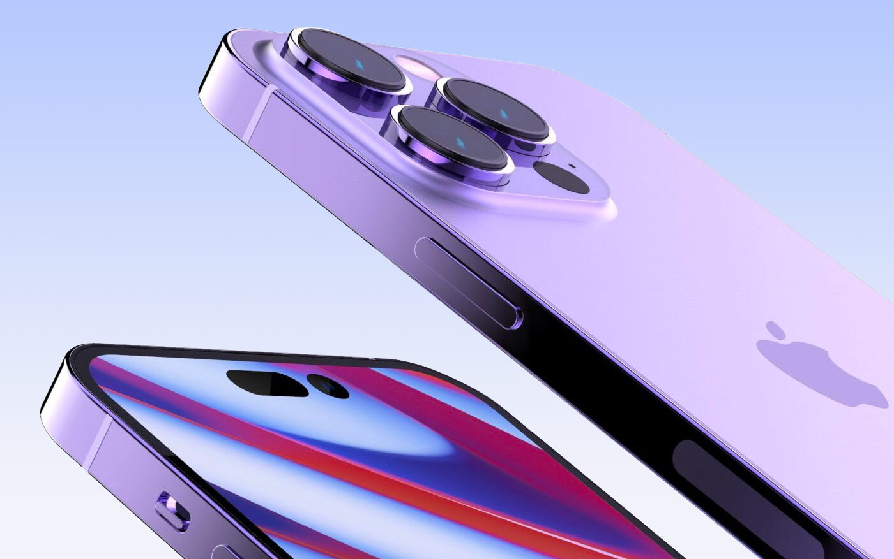
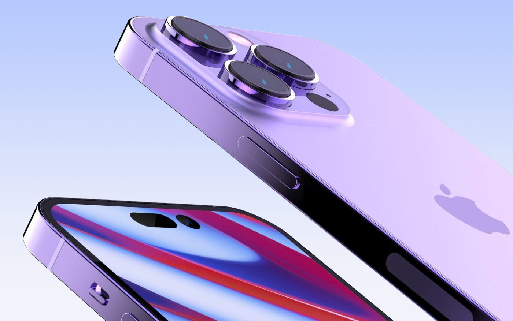
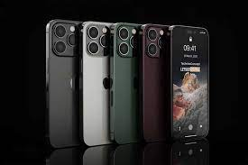
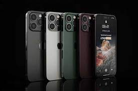

iPhone 14 и iPhone 14 Pro — смартфоны корпорации Apple предположительно на основе процессора Apple A16 Bionic и операционной системы iOS 16. iPhone 14 является базовой моделью 16-го поколения; скорее всего он будет представлен в начале сентября 2022 [1].
По данным инсайдеров, в этом году ожидается отказ компании от моделей серии Mini ввиду низкого спроса покупателей, его место должен занять iPhone с индексом Max — модель начального уровня с увеличенной диагональю дисплея и большим размером самого телефона. В линейку также войдёт базовый iPhone 14 и «профессиональные» модели iPhone 14 Pro и iPhone 14 Pro Max.
По некоторым оценкам аналитиков, этот iPhone станет самым продаваемым смартфоном в 2022 году.
 
  

Ожидается, что модели линейки Pro лишатся выреза в экране «под чёлку» в пользу отверстия в дисплее, так как датчики Face ID будут размещены под дисплеем. Остальные модели серии изменений дисплея не получат, как и функцию ProMotion с адаптивной частотой обновления.
Экраны всех смартфонов линейки iPhone 14 будут выполнены по технологии OLED, при этом дисплеи iPhone 14 Pro и iPhone 14 Pro Max будут поддерживать частоту обновления 120 Гц. Новинки будут построены на базе однокристальной системы Apple A16, которая производится силами компании TSMC с использованием 3-нм технологического процесса[2]. Также телефон может получить функцию постоянно включенного дисплея. Такая технология впервые использована компанией Apple в устройствах Apple Watch.
Хотите узнать еще больше? Нажмите СЮДА